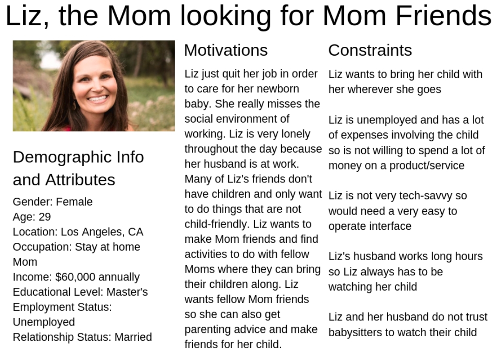
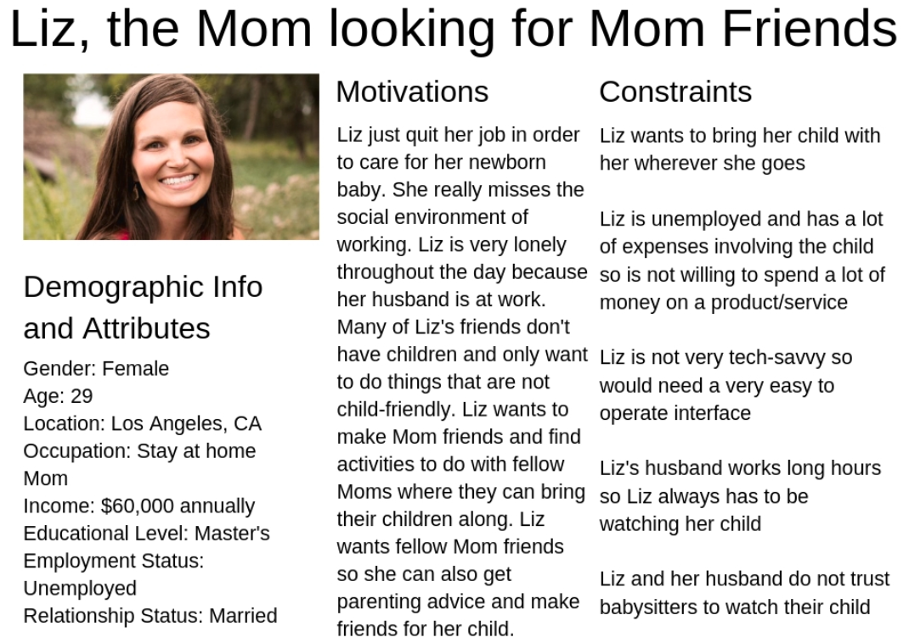

At such a big school like UCLA it is hard to find a sense of community. Many students aim to find this by joining various student organizations, but find that even these organizations are very large and not very tight knit. My proposed application will strengthen the social fabric of student groups on college campuses by easily allowing members to create and view various social events to attend with their fellow members, as well as giving them an outlet to interact with one other. The application will also provide the same benefits for other groups of individuals outside of college, such as stay at home moms.
An interview was conducted to collect qualitative research on the topic of social fabric. The interviewee was a student at UCLA and the interview focused on his experience as a UCLA student and member of multiple student organizations.
Key Quotes:
“I think being part of a community requires being an active member and particularly its one of the best ways to get the most out of being in that community being you can help shape it in a positive direction. And being part of these communities has made a UCLA, a big school, feel small so when I’m participating in these communities not only do I have the opportunity to make these relationships and be amongst like minded individuals, but the benefits of being an active participant and bonding with other community members I think is really rewarding”
“UCLA is a very big school and although there’s a lot of remarkable programs and opportunities to engage the community, it doesn’t always play out that way. Although there might be basketball games or sports outings that students attend, there’s oftentimes a limit to where people can bridge, on campus, in terms of interacting with a lot of different types of students. So I think inherently with a school that size, it makes it a little challenging, as well.”
See full interview details here.
 

Scenario 1:It’s a beautiful July day and Liz is at home with her child. The nice weather is making Liz want to go outside and do something fun. Liz, however, has to be with her child as her child is very young and Liz does not like hiring babysitters. Liz is also very lonely given that her husband is at work and she wants to hangout with friends. All of Liz’s friends do not have children and only want to partake in activities that are not child friendly. Liz’s child has not been sleeping through the night and Liz would love to ask fellow Mom’s what tricks they have used to successfully get their child to sleep. Liz goes onto his new app and goes to the calendar portion and clicks on today’s date. Liz sees a list of child-friendly events occurring and sees what other Moms using the app are attending. Liz sees that a lot of Moms are planning on going on a walk at the park later that day and because Liz is so lonely she decides this looks fun and wants to go. She clicks “RSVP” and marks that she is attending and then clicks “Chat” to create a group message with all the Moms that are attending and asks if anyone has advice on how to get your child to sleep through the night. Alternatively, if Liz does not see an event that looks interesting to her she can suggest an event and post it to the given date so that others can see the idea and decide if they want to go or not.
Scenario 2: Today especially, Liz really wants to go to the beach, but does not want to go alone. Liz goes onto her new app and goes to the calendar portion and clicks on today’s date. Liz presses the + button and creates a Mom and Daughter beach event. Later in the day, Liz is having trouble getting her child to take a nap, so Liz goes back onto the app clicks on today’s date, clicks on her beach event and sees that other moms have RSVPed that they are coming. Liz chats the moms to asks for advice about how to get her child to sleep and let’s them know she is excited to see them at the beach later in the day.
The low fidelity prototype brought the wireframe sketches to life and made them interactive. This version added thank you screens which the wireframe sketches did not have.

This version added design elements and graphics.

I tested my design on 5 people. I had each person answer a few pre-questions then I had them answer questions while interacting with the design and lastly I had them answer some post-questions. All of the questions were put into a google form shown here.
A copy of the responses is shown here.
And a sample video showing one of my users interacting with the design and answering questions is shown here.
My main takeaway from my evaluations is that overall my app is getting very positive feedback, however there is room for improvement when it comes to helping users that are confused or need help. To address this problem, I plan to create a help page that users can access on every page that gives them access to help when they need it.
This version was edited based on feedback from the professor and from usability testing. Some of the main things that were edited were: